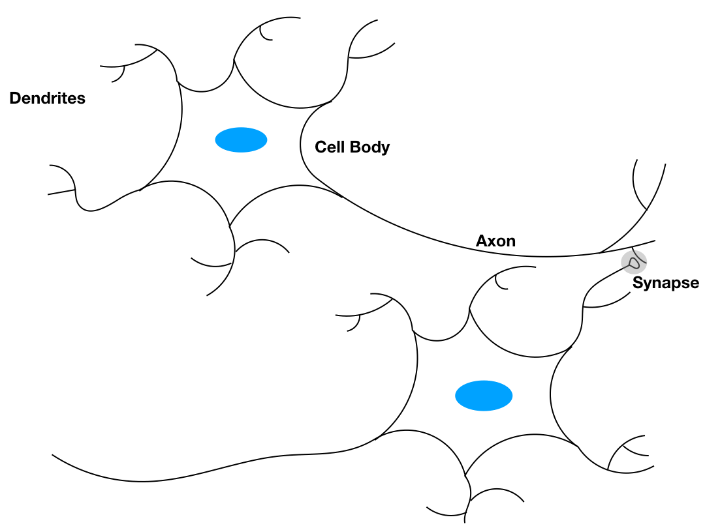

An Introduction to Neural Networks
Keywords: neural networks
Neural Networks[1]
Neural Networks are a model of our brain that is built with neurons and it is considered as the source of intelligence. There is almost neurons in the human brain and connections of each neuron to other neurons. Some of these brilliant structures were given when we were born. But this is not a decision for anything, such as our IQ, skills, etc. Because some other structures could be established by experience, and this progress is called learning. Learning is considered as the establishment or modification of the connections between neurons.
Biological Neural Network is the system of intelligence. Memories and other neural functions are stored in the neurons and their connections. Up to now, neurons and their connections are taken as the main direction of research of intelligence.
Artificial Neural network(ANN for short) is the name of a mathematical model which is a tool of studying and simulating biological neural networks, and what we do here is to build a small neural network and to observe their performance. However, these small models have an amazing capacity in solving difficult problems which is hard or impossible to achieve by traditional methods. Traditional methods are not the old ones but the ones without learning progress or the ones dealing with traditional problems like sorting, solving equations, etc. What we say small model here is really small because the only small model can be investigating easily and efficiently. However, the bigger models are constructed with small ones. So when we gain an insight into the smaller building blocks, we can predict the bigger ones’ performance precisely. By the way, big or small are all relative relation in ANN and all ANNs are tiny to biological neural networks, now.
Aha, another fundamental distinction between ANNs and biological neural networks is that ANNs are built of silicon.
Biological Inspiration

This figure represents the abstraction of two neurons. Although it looks humble, it has already had all the components of our best performance ANNs. This is the strong evidence that tells us the real intelligence is not so easy to simulate.
Let’s look at this simplified structure. Three principal components:
- Dendrites
- Cell body
- Axon
Dendrites, tree-like receptive networks of nerve fibers, that carry electrical signals into the cell body. Cell body, it sums, and thresholds these incoming signals. Axon is a single long fiber carrying electrical signals to other neurons.
The contact between dendrites and axons in the structure called synapse. This is an interesting structure for its properties largely influence the performance of the whole network.
More details of biological neural science should be found in their subject textbooks. However, in my personal opinion, we can never build artificial intelligence by just studying ANNs, what we should do is to investigate our brain or neural science. In other words. to find artificial intelligence, go to biological intelligence. However, until today, our models are far from any known brains on earth.
But there are still two similarities between artificial neural network and biological one:
- building blocks of both networks are simple computational devices
- connection between neurons determine the function of the networks
‘there is also the superiority of ANNs or more rigorous of the computer that is the speed. Biological neurons are slower than electrical circuits( to ).’ However, I don’t agree with this point, for we don’t even know what computation has been done during the period of seconds. So this comparison made no sense. But the parallel structure in brains is beyond the reach of any computer right now.
A Brief History of Artificial Neural Networks
This is just a brief history of ANNs because so many researchers had done so many works during the last 100 years. The following timeline is just some big event in the last 50 years.
‘Neurocomputing: foundations of research’ is a book written by John Anderson. It contains 43 papers of neural networks representing special historical interest.
Before we list historical developments, another important issue must be stressed that is our strategy in researching new technology. Two ingredients are necessary for studying any new technology.
- Concept
- Implementation
The concept is the way we think about the topic, some view of it that gives clarity not there before. These ideas sometimes can be described through mathematics, sometimes can not. But the idea can not be proofed mathematically now does not imply it is wrong. A not a long time ago, people think our soul stays in our hearts until the view of the heart as a pump. Viewing the heart as a pump is a kind of concept.
Whether or not the concept is proofed mathematically, it can be implemented through some algorithms and give us a visualized result. This is another judgment of a new concept besides mathematics. Even the concept had been proofed, implementation is also necessary for this can tell whether it is useless for current computational resources.
ANNs come from the building of background of physics, psychology, and neurophysiology:
- From the late 19th to early 20th: general theories of learning, vision, and conditioning were built, but there was no mathematical model of neuron operation
- 1943: Warren McCulloch and Walter Pitts found neurons could compute any arithmetic or logic function and this is considered as the origin of neural network field
- 1949: Donald Hebb proposed that classical conditioning is presented because of an individual neuron. He proposed a mechanism for learning in biological neurons.
- 1958: Fist practical application of ANN that is perceptron proposed by Rosenblatt. This model was able to perform pattern recognition.
- 1960: Bernard Widrow and Ted Hoff developed a new learning algorithm and train adaptive linear neuron networks which are similar to Rosenblatt’s perceptron in both structure and capability.
- 1969: Marvin Minsky and Seymour Papert proofed the limitation of Rosenblatt’s perceptron and Bernard Widrow and Ted Hoff’s learning algorithm. And they thought further research on neural networks is a dead end. This coursed a lot of researchers gave up.
- 1972: Teuvo Kohonen and James Anderson built the neural networks acting as memories independently.
- 1976: Stephen Grossberg built a self-organizing network
- 1982: Statistical mechanics was used to explaining the recurrent network by John Hopfield which was also known as an associative memory
- 1986: Backpropagation is proposed by David Rumelhart and James McClelland which broke the limitation given by Minsky
This history is ended by 1990. This is just the beginning of the neural network to us to now, however, what we do today is also the beginning of the future. This progress is not “slow but sure”, it was sometimes dramatic but sometimes little.
New concepts of neural networks come from the following aspects:
- innovative architectures
- training rules
What has to be considered is a computational resource as well. ANNs can not solve every problem for example it can never take you to the moon. But some part of the rocket who takes to the moon is built by ANNs is possible. It is an essential tool. About brain little had we known. The mechanism of the brain is a great source of concepts about neuron networks, and the most important advances in neural networks lie in the future.
Conclusion
- We took a look at the structure of a neuron, ANN is a simple model of biological neural network.
- A brief history of neural network
- Concept and implementation are two key steps in investigating new technology
- Biological neural networks are the resource of concepts of ANNs
References
Demuth, Howard B., Mark H. Beale, Orlando De Jess, and Martin T. Hagan. Neural network design. Martin Hagan, 2014. ↩︎